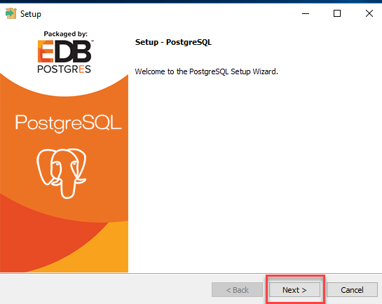
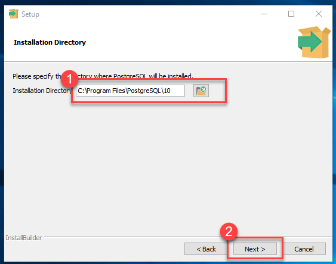
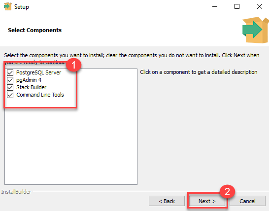
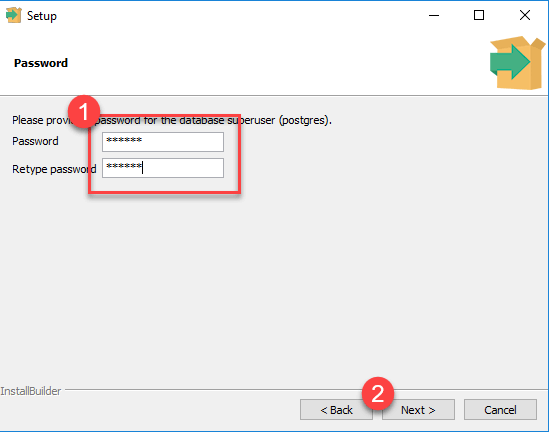
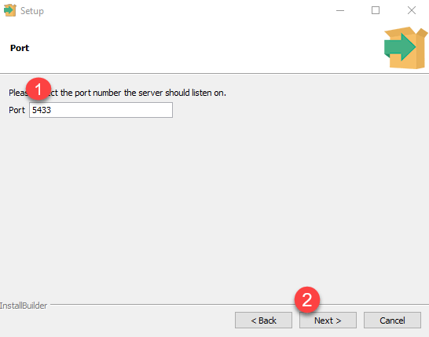

- Kunjungi situs resmi PostgreSQL di https://www.postgresql.org/downnload/windows. Pilih versi PostgreSQL yang sesuai dengan sistem operasi Windows Anda (32-bit atau 64-bit).
- Setelah selesai mengunduh, buka file installer PostgreSQL yang sudah diunduh. Klik dua kali pada file installer untuk memulai proses instalasi. 
- Pilih lokasi di mana Anda ingin menginstal PostgreSQL. Secara default, ini akan menjadi
C:\Program Files\PostgreSQL\. Klik "Next" untuk melanjutkan. 
- Pilih komponen yang ingin Anda instal. Secara default, opsi "PostgreSQL Server" akan dipilih bersama dengan alat-alat klien. 
- Atur kata sandi untuk pengguna postgres, yang merupakan pengguna administratif default. Klik
Next. 
- Pilih port yang akan digunakann oleh server PostgreSQL. Port default adalah
54321. 
- Pilih apakah Anda ingin menginstal Stack Builder dan/atau command line tools tambahan. Klik
Next.
- Klik "Next" untuk memulai instalasi. Tunggu sampai proses instalasi selesai.
- Setelah instalasi selesai, Anda akan melihat layar konfirmasi. Pastikan untuk memeriksa opsi untuk memulai Stack Builder jika Anda memilih untuk menginstalnya. Klik "Finish" untuk menutup installer.
Setelah instalasi selesai, Anda dapat memulai menggunakan PostgreSQL di Windows Anda. Pastikan untuk memulai layanan PostgreSQL setelah instalasi selesai untuk dapat mengakses server database.